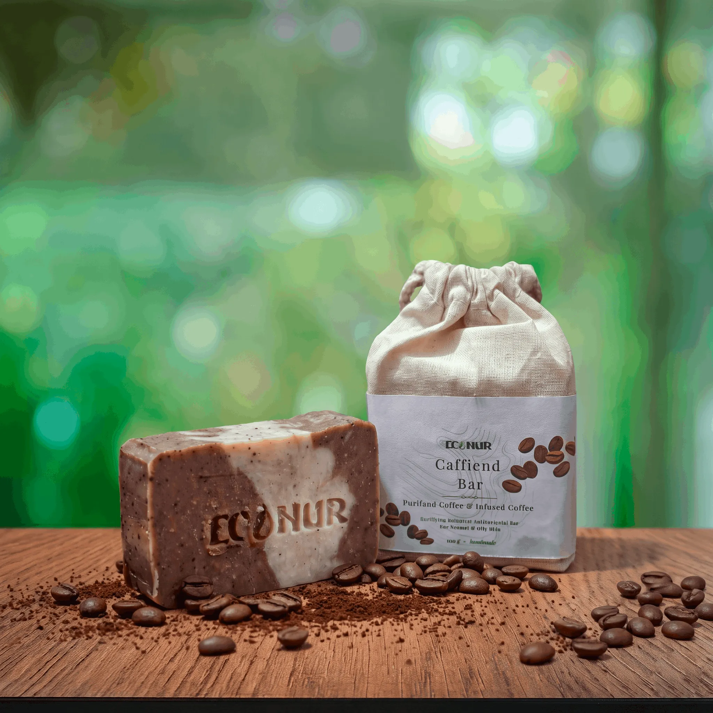

কম্বিনেশন ও মাইল্ড অয়েলি ত্বকের জন্য কফি ক্লিনজিং বার
Caffiend Bar বিশেষভাবে তৈরী করা হয়েছে কম্বিনেশন ও মাইল্ড অয়েলি ত্বকের জন্য। যারা ত্বকের অতিরিক্ত তেল ও অপরিষ্কার পোরসের সমস্যায় পড়েন এবং প্রতিদিনের গোসলে একটু বাড়তি সতেজতা চান — তাদের জন্য এই বারটি আদর্শ।
কফি অতিরিক্ত তেল ও ময়লা অপসারণ করে পোরস পরিষ্কার রাখে। এর প্রদাহ-বিরোধী ও অ্যান্টিব্যাকটেরিয়াল গুণ ব্রণ-সৃষ্টিকারী ব্যাকটেরিয়া নিয়ন্ত্রণ করে এবং লালচে ভাব কমায়।
গ্রাউন্ড কফির দানা মৃত ত্বকের কোষ মৃদুভাবে সরিয়ে দেয়, ত্বককে তাজা ও প্রাণবন্ত করে তোলে। কফির ক্যাফেইন রক্ত সঞ্চালন উন্নত করে, যা সেলুলাইট ও পাফিনেসের চেহারা সাময়িকভাবে কমাতে সাহায্য করতে পারে।
কফি ত্বকের অতিরিক্ত তেল ও ময়লা শোষণ করে পোরস পরিষ্কার রাখে। এর প্রদাহ-বিরোধী ও অ্যান্টিব্যাকটেরিয়াল গুণ ব্রণ-সৃষ্টিকারী ব্যাকটেরিয়া নিয়ন্ত্রণে সাহায্য করে।
গ্রাউন্ড কফির প্রাকৃতিক দানা মৃত ত্বকের কোষ মৃদুভাবে সরিয়ে দেয়, ত্বককে তাজা ও উজ্জ্বল করে তোলে এবং প্রতিটি গোসলের পর পরিষ্কার অনুভূতি দেয়।
কফিতে থাকা ক্যাফেইন ত্বকের নিচের রক্ত সঞ্চালন উন্নত করে, যা সেলুলাইট ও পাফিনেসের চেহারা সাময়িকভাবে কমাতে এবং ত্বককে আরও প্রাণবন্ত দেখাতে সাহায্য করতে পারে।
আমন্ড ও অলিভ অয়েল ত্বককে আর্দ্র রাখে এবং কফির ক্লিনজিং শক্তির পাশাপাশি ত্বকের প্রাকৃতিক ব্যারিয়ার রক্ষা করে — যাতে ত্বক অতিরিক্ত শুষ্ক না হয়।
প্রতিটি উপাদান নির্দিষ্ট উদ্দেশ্যে ব্যবহার করা হয়েছে।
শুধুমাত্র বাহ্যিক ব্যবহারের জন্য। চোখে গেলে প্রচুর পানি দিয়ে ধুয়ে ফেলুন। কোনো ধরনের জ্বালা বা অস্বস্তি হলে ব্যবহার বন্ধ করুন। সরাসরি রোদ থেকে দূরে, ঠাণ্ডা ও শুকনো স্থানে সংরক্ষণ করুন।
কম্বিনেশন ও মাইল্ড অয়েলি ত্বকের জন্য প্রতিদিনের এনার্জাইজিং ক্লিনজিং বার। অর্ডার করতে সরাসরি WhatsApp এ যোগাযোগ করুন।
Chat on WhatsApp